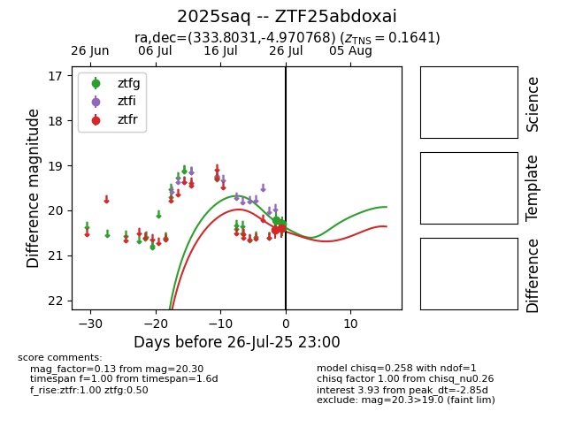

Target 2025saq at 2025-07-26 23:00, see:
FINK: fink-portal.org/2025saq
Lasair: lasair-ztf.lsst.ac.uk/objects/2025saq
ALeRCE: alerce.online/object/2025saq
TNS: wis-tns.org/object/2025saq
YSE: ziggy.ucolick.org/yse/transient_detail/2025saq
alt names
ZTF25abdoxai (ztf,fink)
2025saq (tns,yse)
coordinates:
equatorial (ra, dec) = (333.8031,-4.97077)
galactic (l, b) = (56.6388,-46.71984)
photometry
last ztfg=20.30, ztfr=20.40
3 ztfg, 2 ztfr detections
